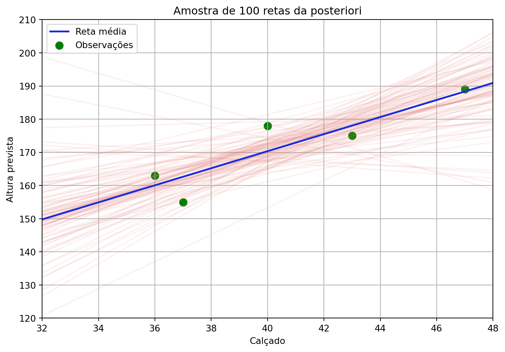

# Importação das principais bibliotecas necessárias para análise de dados, visualização, modelagem bayesiana e diagnóstico.
import arviz as az
import bambi as bmb
import pandas as pd
import numpy as np
import matplotlib.pyplot as plt
import seaborn as sns
from scipy import statsFluxo de Trabalho na Modelagem Bayesiana
Do modelo linear à distribuição a posteriori
Inferência bayesiana
Modelagem estatística
Bambi
PyMC
Fluxo de trabalho
Distribuições a priori
Inferência a posteriori
Explorando o fluxo de trabalho bayesiano em modelos de regressão linear
A modelagem bayesiana constitui um processo sistemático e iterativo para integrar dados e conhecimento prévio, visando a compreensão aprofundada de um fenômeno. O fluxo de trabalho bayesiano é um ciclo contínuo que envolve:
- Especificação do modelo: Definir a estrutura probabilística que representa o fenômeno e as relações entre as variáveis.
- Definição de priors: Incorporar conhecimento prévio sobre os parâmetros do modelo através de distribuições de probabilidade.
- Amostragem da posteriori: Computar a distribuição de probabilidade dos parâmetros, combinando priors e a verossimilhança dos dados.
- Diagnóstico: Avaliar a qualidade e a convergência dos resultados da amostragem (e.g., verificar se os algoritmos de MCMC funcionaram corretamente).
- Inferência: Extrair conclusões sobre os parâmetros e o modelo a partir da distribuição posteriori.
- Validação: Avaliar o desempenho do modelo, verificando sua capacidade de reproduzir os dados observados, prever novos dados ou se está alinhado com conhecimento externo.
- Predição: Utilizar o modelo ajustado para fazer previsões sobre observações futuras.
Descobertas ou problemas identificados em etapas posteriores (como diagnóstico ou validação) frequentemente levam à revisão e ao refinamento de decisões tomadas em etapas anteriores (como a especificação do modelo ou a escolha das priors). Para uma dsicussão detalhada do fluxo de trabalho Bayesiano, veja o texto Bayesian workflow.
Para demonstrar este fluxo de trabalho de forma prática, utilizaremos a biblioteca Bambi (BAyesian Model-Building Interface), uma interface de alto nível construída sobre o PyMC que simplifica a implementação de modelos bayesianos comuns em Python. A biblioteca Bambi utiliza uma sintaxe baseada em fórmulas, semelhante àquela encontrada em pacotes R como lme4 ou brms, permitindo que nos concentremos mais nas etapas analíticas do fluxo de trabalho do que nos detalhes computacionais subjacentes.
Nosso objetivo será percorrer estas etapas utilizando o conjunto de dados altura_adultos_subset.csv, que descreve a relação entre altura de indivíduos e número do calçado. Ao fazer isso, esperamos que você reflita criticamente sobre como a avaliação sistemática e o refinamento contínuo do modelo, facilitados por ferramentas como Bambi/PyMC, são essenciais para extrair conhecimento científico robusto sobre os processos subjacentes aos dados observados.
Nosso objetivo será percorrer cada uma das etapas do fluxo de trabalho bayesiano utilizando o conjunto de dados altura_adultos_subset.csv, que descreve a relação entre a altura de indivíduos e o número do calçado.
1 Preparação do ambiente
2 Importação e visualização dos dados
Vamos visualizar a relação entre o número do calçado e a altura. Esta etapa é importante para termos uma ideia preliminar do padrão nos dados a fim de julgarmos qual modelo adequado para descrever esta relação.
df = pd.read_csv('https://raw.githubusercontent.com/FCopf/datasets/refs/heads/main/altura_adultos_subset.csv')sns.regplot(data=df, x='calcado', y='altura', ci=None, scatter=True, fit_reg=False)
Os dados observados, sugere que um modelo linear é razoável se buscamos prever a altura de uma passoal adultra como função do número do calçado o que justifica a implementação de um modelo de regressão linear simples.
3 Especificação e ajuste do modelo
Especificamos um modelo de regressão linear bayesiano em que a altura é modelada como uma função do número do calçado. A biblioteca Bambi adota uma sintaxe onde expressamos a relação entre as variáveis na forma y ~ x. Essa notação indica que a variável resposta (y) é explicada linearmente pela variável preditora (x), o que corresponde, ao modelo:
\[
y = \beta_0 + \beta_1 x.
\]
Nesse caso, o Bambi interpreta a fórmula altura ~ calcado como uma especificação de que a altura dos indivíduos depende linearmente do número do calçado, com coeficientes a serem estimados a partir dos dados.
mod = bmb.Model("altura ~ calcado", df)
mod Formula: altura ~ calcado
Family: gaussian
Link: mu = identity
Observations: 5
Priors:
target = mu
Common-level effects
Intercept ~ Normal(mu: 172.0, sigma: 300.3331)
calcado ~ Normal(mu: 0.0, sigma: 7.3612)
Auxiliary parameters
sigma ~ HalfStudentT(nu: 4.0, sigma: 11.8659)
Estrutura do modelo em Bambi
Ao inspecionair o objeto mod, podemos verificar um resumo da estrutura do modelo especificado:
- Formula:
altura ~ calcado: Descreve a fórmula estatística especificada no modelo. - Family:
gaussian: Indica a família da distribuição de probabilidade que Bambi assumiu para a variável resposta. - Link:
mu = identity: Especifica a função de ligação que conecta o modelo linear ao parâmetro da família da distribuição. - Observations:
5: Mostra o número de linhas (observações) no DataFrame que foram usadas para construir o modelo. - Priors: Distribuições a priori. Se não especificadas pelo usuário, o Bambi atribui priors padrão razoáveis parea o conjuto de dados e o modelo utilizado.
- target = mu: Indica que o modelo linear está focando em estimar a média (mu) da distribuição Gaussiana.
- Common-level effects: Lista os parâmetros associados aos termos fixos no modelo linear.
- Intercept ~ Normal(…): Define a prior para o intercepto (\(\beta_0\))
- calcado ~ Normal(…): Define a prior para o coeficiente de regressão associado à variável calcado (\(\beta_1\)).
- Auxiliary parameters: Parâmetros não diretamente modelados pelo predictor linear.
- sigma ~ HalfStudentT(…): Define a prior para o parâmetro de desvio padrão (\(\sigma\)).
- target = mu: Indica que o modelo linear está focando em estimar a média (mu) da distribuição Gaussiana.
4 Amostragem MCMC
Realizamos a amostragem MCMC (Markov Chain Monte Carlo) para obter amostras da distribuição a posteriori dos parâmetros, combinando as informações fornecidas pelos dados com as distribuições a priori.
mod_fit = mod.fit()
mod_fitarviz.InferenceData
-
<xarray.Dataset> Size: 104kB Dimensions: (chain: 4, draw: 1000) Coordinates: * chain (chain) int64 32B 0 1 2 3 * draw (draw) int64 8kB 0 1 2 3 4 5 6 7 ... 993 994 995 996 997 998 999 Data variables: sigma (chain, draw) float64 32kB 11.28 17.0 17.04 ... 12.71 11.66 14.46 Intercept (chain, draw) float64 32kB -9.752 123.6 300.7 ... 62.31 43.73 calcado (chain, draw) float64 32kB 4.246 1.085 -2.97 ... 2.748 3.055 Attributes: created_at: 2025-05-28T23:12:20.369659+00:00 arviz_version: 0.21.0 inference_library: pymc inference_library_version: 5.22.0 sampling_time: 1.2569572925567627 tuning_steps: 1000 modeling_interface: bambi modeling_interface_version: 0.15.0 -
<xarray.Dataset> Size: 496kB Dimensions: (chain: 4, draw: 1000) Coordinates: * chain (chain) int64 32B 0 1 2 3 * draw (draw) int64 8kB 0 1 2 3 4 5 ... 995 996 997 998 999 Data variables: (12/17) tree_depth (chain, draw) int64 32kB 2 3 3 1 4 3 ... 2 2 3 3 3 2 step_size (chain, draw) float64 32kB 0.6605 0.6605 ... 0.8144 smallest_eigval (chain, draw) float64 32kB nan nan nan ... nan nan index_in_trajectory (chain, draw) int64 32kB -1 -3 -4 -1 -6 ... -4 4 -2 1 largest_eigval (chain, draw) float64 32kB nan nan nan ... nan nan max_energy_error (chain, draw) float64 32kB 0.08609 0.6811 ... 1.329 ... ... perf_counter_start (chain, draw) float64 32kB 1.37e+06 ... 1.37e+06 n_steps (chain, draw) float64 32kB 3.0 7.0 7.0 ... 7.0 3.0 energy_error (chain, draw) float64 32kB 0.08609 0.2096 ... 0.1448 energy (chain, draw) float64 32kB 30.65 32.49 ... 31.67 diverging (chain, draw) bool 4kB False False ... False False reached_max_treedepth (chain, draw) bool 4kB False False ... False False Attributes: created_at: 2025-05-28T23:12:20.382090+00:00 arviz_version: 0.21.0 inference_library: pymc inference_library_version: 5.22.0 sampling_time: 1.2569572925567627 tuning_steps: 1000 modeling_interface: bambi modeling_interface_version: 0.15.0 -
<xarray.Dataset> Size: 80B Dimensions: (__obs__: 5) Coordinates: * __obs__ (__obs__) int64 40B 0 1 2 3 4 Data variables: altura (__obs__) float64 40B 178.0 163.0 175.0 155.0 189.0 Attributes: created_at: 2025-05-28T23:12:20.386166+00:00 arviz_version: 0.21.0 inference_library: pymc inference_library_version: 5.22.0 modeling_interface: bambi modeling_interface_version: 0.15.0
5 Verificação das priors
Neste exemplo as priors foram atribuídas automaticamente. Veremos como especificá-las manualmente mais adiante. Por enquanto, iremos nos concentrar em visualizar as distribuições a priori para entender as expectativas iniciais do modelo sobre os parâmetros antes de processar os dados.
mod.plot_priors(var_names=['Intercept', 'calcado', 'sigma'], figsize=(9, 4))array([<Axes: title={'center': 'Intercept'}>,
<Axes: title={'center': 'calcado'}>,
<Axes: title={'center': 'sigma'}>], dtype=object)
6 Diagnósticos de convergência
Após realizar a amostragem MCMC, é fundamental verificar se o processo de amostragem funcionou corretamente. Para isso, utilizamos diagnósticos de convergência, que nos ajudam a avaliar se as cadeias geradas estão representando adequadamente a distribuição a posteriori dos parâmetros.
Uma das ferramentas mais comuns para essa avaliação são os trace plots — gráficos que mostram os valores amostrados para cada parâmetro ao longo das iterações. Idealmente, essas cadeias devem parecer bem misturadas e sem padrões visíveis, o que indica que a amostragem atingiu o chamado estado estacionário, sugerindo que as estimativas são confiáveis.
Tendências, oscilações sistemáticas ou falta de sobreposição entre diferentes cadeias pode ser um sinal de que o algoritmo não convergiu adequadamente, exigindo ajustes no modelo ou no processo de amostragem.
# Gráficos de diagnóstico
fig, axes = plt.subplots(3, 2, figsize=(8, 8))
# Trace plots
az.plot_trace(mod_fit, var_names=['Intercept', 'calcado', 'sigma'], axes=axes)
plt.suptitle('Trace Plots - Convergência das Cadeias MCMC', fontsize=14, fontweight='bold')
plt.tight_layout()
plt.show()7 Resumo do ajuste
az.summary(mod_fit)| mean | sd | hdi_3% | hdi_97% | mcse_mean | mcse_sd | ess_bulk | ess_tail | r_hat | |
|---|---|---|---|---|---|---|---|---|---|
| sigma | 9.138 | 4.231 | 3.522 | 16.684 | 0.118 | 0.147 | 1396.0 | 2149.0 | 1.0 |
| Intercept | 66.831 | 43.266 | -11.464 | 156.825 | 0.890 | 1.243 | 2552.0 | 1945.0 | 1.0 |
| calcado | 2.587 | 1.059 | 0.542 | 4.611 | 0.022 | 0.031 | 2559.0 | 1976.0 | 1.0 |
Após a amostragem MCMC e a verificação da convergência, exploramos um resumo estatístico das distribuições a posteriori dos parâmetros do modelo. Na tabela acima, cada linha corresponde a um parâmetro (sigma, Intercept, calcado). As colunas fornecem estimativas pontuais (MEAN), intervalos de incerteza (SD, HDI) e métricas para verificar a qualidade e a confiabilidade das amostras MCMC (MCSE, ESS, R_HAT).
Tabela resumo em um modelo bayesiano
MEAN: A média das amostras a posteriori para o parâmetro.SD: O desvio padrão das amostras a posteriori.HDI_3%eHDI_97%: Os limites inferior (3%) e superior (97%) do Intervalo de Credibilidade de Maior Densidade (HDI).MCSE_MEAN(Monte Carlo Standard Error of the Mean): O Erro Padrão de Monte Carlo da Média estima a variabilidade da estimativa da média a posteriori devido ao número finito e à correlação entre as amostras MCMC.MCSE_SD(Monte Carlo Standard Error of the Standard Deviation): O Erro Padrão de Monte Carlo do Desvio Padrão. Similar ao MCSE_MEAN, mas estima a precisão com que o desvio padrão a posteriori foi estimado a partir das amostras.ESS_BULK(Effective Sample Size - Bulk): O Tamanho Efetivo da Amostra. Devido à autocorrelação nas cadeias MCMC, o número de amostras efetivamente independentes é geralmente menor que o número total de amostras coletadas.ESS_TAIL(Effective Sample Size - Tail): O Tamanho Efetivo da Amostra para as características das caudas da distribuição (como quantis extremos).R_HAT(Gelman-Rubin statistic): O R-hat é um diagnóstico de convergência que compara a variabilidade dentro de cada cadeia MCMC com a variabilidade entre as diferentes cadeias. Se todas as cadeias convergiram para a mesma distribuição estacionária (a posteriori alvo), o valor de R_HAT deve ser muito próximo de 1 (idealmente <= 1.01 ou <= 1.05 no máximo). Valores significativamente maiores que 1 indicam que as cadeias não convergiram bem.
8 Verificação das posteriores e comparação com as priors
A comparação gráfica entre as distribuições a priori e a posteriori dos parâmetros nos ajuda a avaliar o quanto os dados foram informativos, mostrando quais parâmetros foram mais ou menos atualizados em relação às nossas crenças iniciais. Uma pequena mudança da prior para a posteriori indica que os dados trouxeram pouca informação nova sobre aquele parâmetro, enquanto uma grande diferença sugere que os dados foram bastante informativos. No gráfico abaixo, visualizamos essa comparação para os parâmetros do modelo (Intercept, calcado e sigma), onde a linha superior exibe as distribuições a priori (atribuídas automaticamente) e a linha inferior apresenta as distribuições a posteriori resultantes da análise bayesiana.
param_order = ['Intercept', 'calcado', 'sigma']
fig, axes = plt.subplots(nrows=2, ncols=len(param_order), figsize=(9, 6))
mod.plot_priors(var_names=param_order, ax=axes[0, :])
az.plot_posterior(mod_fit, var_names=param_order, ax=axes[1, :])
axes[0, 0].set_ylabel('Densidade das Prioris')
axes[1, 0].set_ylabel('Densidade das Posteriores')Text(0, 0.5, 'Densidade das Posteriores')
az.plot_trace(mod_fit, figsize=(9,10))array([[<Axes: title={'center': 'sigma'}>,
<Axes: title={'center': 'sigma'}>],
[<Axes: title={'center': 'Intercept'}>,
<Axes: title={'center': 'Intercept'}>],
[<Axes: title={'center': 'calcado'}>,
<Axes: title={'center': 'calcado'}>]], dtype=object)9 Intervalo de credibilidade da reta de regressão
Tendo o modelo ajustado, podemos utilizá-lo para avaliar a incerteza associada à reta média, isto é, o intervalo de credibilidade para a reta de regressão. As amostras da posteriori geradas pelo método MCMC nos fornecem várias combinações de parâmetros possíveis ajustadas ao conjunto de dados. Podemos entender estas como retas possíveis para o conjunto observado. Algumas das combinações dos parâmetros fornecem retas mais prováveis, outras menos. Vamos inicialmente visualizar uma amostra de 100 dessas retas possíveis.
Para isso, precisamos:
- Obter a distribuição posterior e os valores esperados para dois pontos a fim de construir algumas retas.
x_vals = [32, 48]
novo_x = pd.DataFrame({"calcado": x_vals})
posterior_par = mod.predict(mod_fit, kind="response_params", data=novo_x, inplace=False)
mu_vals = posterior_par.posterior['mu'].values
mu_flat = mu_vals.reshape(-1, mu_vals.shape[-1])- Calcular a reta média.
y_mean = (posterior_par.posterior['Intercept'].mean().values +
posterior_par.posterior['calcado'].mean().values * x_vals)- Plotar amostras de algumas dessas combinações
n = 100
indices = np.random.choice(mu_flat.shape[0], size=n, replace=False)
# Plotar as retas
plt.figure(figsize=(9, 6))
for i in indices:
plt.plot(x_vals, mu_flat[i, :], '#e37d76', alpha=0.1)
# Adicionar os pontos observados
sns.scatterplot(data=df, x='calcado', y='altura', color='green', label='Observações')
# Adicionar reta média
plt.plot(x_vals, y_mean, '#162be0', linewidth=2, label='Reta média')
plt.xlabel("Calçado")
plt.ylabel("Altura prevista")
plt.title(f"Amostra de {n} retas da posteriori")
plt.legend()
plt.grid(True)
plt.ylim(120, 210)
plt.xlim(32, 48)
plt.show()
Observe que a maior parte das retas passa próxima ao centro da distribuição de \(x\) e \(y\), havendo uma maior variabilidade nos extremos.
- Podemos criar um envelope contendo as combinações que determinam os intervalos de credibilidade para a reta média.
x_seq = np.linspace(32, 48, 100)
intercept = posterior_par.posterior['Intercept'].values.flatten()
slope = posterior_par.posterior['calcado'].values.flatten()
y_seq = intercept[:, None] + slope[:, None] * x_seq[None, :]
y_ci = np.percentile(y_seq, [2.5, 97.5], axis=0)E plotar os resultados:
plt.figure(figsize=(9, 6))
# Intervalo de credibilidade (envelope)
plt.fill_between(x_seq, y_ci[0], y_ci[1], color='#e37d76', alpha=0.2,
label='IC 95% da reta média')
# Adicionar os pontos observados
sns.scatterplot(data=df, x='calcado', y='altura', color='green', label='Observações')
# Adicionar reta média
# Calcular reta média para toda a sequência x_seq
intercept_mean = posterior_par.posterior['Intercept'].mean().values
slope_mean = posterior_par.posterior['calcado'].mean().values
y_mean_seq = intercept_mean + slope_mean * x_seq
plt.plot(x_seq, y_mean_seq, '#162be0', linewidth=2, label='Reta média')
plt.xlabel("Calçado")
plt.ylabel("Resposta média predita ($\mu$)")
plt.title("Reta média e intervalo de credibilidade (95%)")
plt.legend()
plt.grid(True)
plt.show()
10 Estrutura de código: Bambi vs PyMC
Quando usar cada abordagem
Bambi: estrutura de código
# Bambi
modelo = bmb.Model("altura ~ calcado", df, priors=priors)
resultados = modelo.fit()Quando usar:
- Deseja implementar modelos estatísticos padrão (regressão linear, GLMs, modelos hierárquicos)
- Necessita de rapidez de desenvolvimento e ajustes
PyMC: estrutura de código
# PyMC - requer definição manual de todas as componentes
with pm.Model() as modelo:
# Priors
beta_0 = pm.Normal("beta_0", mu=60, sigma=5)
beta_1 = pm.Normal("beta_1", mu=2.8, sigma=0.1)
sigma = pm.HalfNormal("sigma", sigma=10)
# Verossimilhança
mu = beta_0 + beta_1 * X
altura = pm.Normal("altura", mu=mu, sigma=sigma, observed=Y)
trace = pm.sample()Quando usar:
- Necessitar controle total sobre a especificação do modelo
- Necessita implementar modelos customizados ou muito complexos
- Necessita de funcionalidades específicas não disponíveis no Bambi